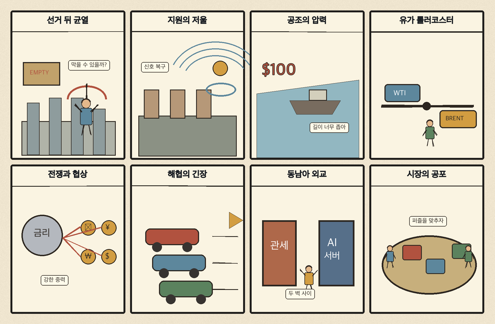
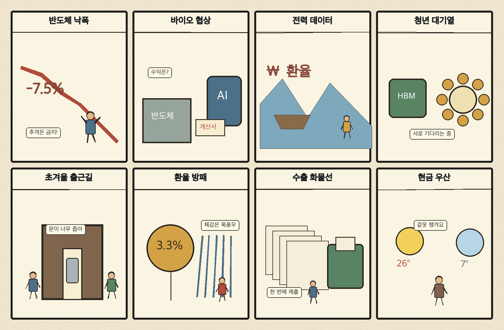

01
퀄컴 · 150.06→156.75달러 · +4.46%
내용요약 시가 대비 +4.46%로 조사군에서 이례적 강세를 보였습니다.
예상여파 시장 전체가 급락한 날의 상대강세여서 지속성은 다음 거래일 거래량과 수급으로 재확인해야 합니다.
MORNING_BRIEFING_20261106
작성 시각: 2026-11-06 06:36 KST · 직전 미국 정규장과 2026-11-06 KST 당일 공개 기사 기준
11월 5일 뉴욕증시는 다우 -3.44%, S&P 500 -4.36%, 나스닥 -5.52%로 급락했습니다. 미국 중간선거 뒤 AI 데이터센터 규제 우려가 커지며 반도체·고베타 성장주에서 매물이 집중됐습니다. 전일 KOSPI도 -5.28%, KOSDAQ은 -5.11% 급락해 오늘은 반등 기대보다 변동성 관리와 장 초반 수급 확인이 우선입니다.
| 지수 | 종가 | 등락률 | 한국 증시 시사점 |
|---|---|---|---|
| 다우존스 | 51,523.06 | -3.44% | 경기민감주 위험선호 위축 |
| S&P 500 | 7,353.73 | -4.36% | 성장주 변동성 확대 |
| 나스닥 종합 | 24,315.00 | -5.52% | 성장주 변동성 확대 |
AI 데이터센터 규제 우려가 반도체와 성장주 매도를 키웠습니다.
전일 5,383.80으로 밀리며 시가 대비로도 큰 폭 하락했습니다.
마이크론 -12.79%로 국내 반도체 투자심리에 부담입니다.
중동 해역 긴장으로 전날 급락분 일부를 되돌렸습니다.
11월 5일 보고서는 수급·컨센서스·30건 이상 유사 조건 표본을 모두 확보하지 못해 공식 추천을 내지 않았습니다. 사후에 종목을 추가하지 않습니다.
| 시장 | 종가 | 등락률 | 기준 |
|---|---|---|---|
| KOSPI | 5,383.80 | -5.28% | 11월 5일 · 시가 대비 -3.52% |
| KOSDAQ | 678.41 | -5.11% | 11월 5일 · 시가 대비 -4.92% |
| 다우존스 | 51,523.06 | -3.44% | 미국 11월 5일 정규장 |
| S&P 500 | 7,353.73 | -4.36% | 미국 11월 5일 정규장 |
| 나스닥 종합 | 24,315.00 | -5.52% | 미국 11월 5일 정규장 |
퀄컴 +4.46%로 급락장 속 조사군 최상위였습니다.
앱러빈 +1.79%로 지수 급락에도 상승했습니다.
마이크론 -12.79%, AMD -10.63%로 낙폭이 컸습니다.
로켓랩 -9.07%, 코인베이스 -8.19%, 테슬라 -8.13%였습니다.
내용요약 시가 대비 +4.46%로 조사군에서 이례적 강세를 보였습니다.
예상여파 시장 전체가 급락한 날의 상대강세여서 지속성은 다음 거래일 거래량과 수급으로 재확인해야 합니다.
내용요약 시가 대비 +1.79%로 상승 마감했습니다.
예상여파 광고기술 종목의 상대강세가 확인됐지만 시장 변동성이 커 추격매수 위험도 높습니다.
내용요약 시가 대비 -12.79%로 조사군 최하위였습니다.
예상여파 AI 데이터센터 투자 규제 우려가 메모리 수요 기대와 고평가 부담을 동시에 압박했습니다.
내용요약 시가 대비 -11.79%로 급락했습니다.
예상여파 AI 네트워크·데이터센터 관련주의 위험 축소가 낙폭을 키웠습니다.
내용요약 시가 대비 -10.63%로 하락했습니다.
예상여파 AI칩 수요 기대 둔화 우려와 기술주 전반의 투매가 겹쳤습니다.
나스닥 -5.52%, S&P 500 -4.36% 급락과 마이크론·AMD의 두 자릿수 낙폭은 국내 반도체와 성장주의 추가 변동성을 예고합니다. 전일 KOSPI와 KOSDAQ도 각각 -5%대 하락해 기술적 반등 가능성은 있지만, 이를 추세 전환으로 단정하기 어렵습니다. 외국인 현·선물 매도 강도, 원·달러 환율, 장 초반 저점 유지 여부를 확인하고 과도한 갭 반등은 추격하지 않는 대응이 필요합니다.
오늘은 추천 없음 — 현금 관망
미국 기술주와 전일 한국 증시가 동시에 급락한 고변동성 국면입니다. 전일까지의 외국인·기관 수급, 컨센서스 변화와 30건 이상 유사 조건 표본을 함께 확보해 종합점수 75점·상승확률 60%·예상 손익비 1.5를 모두 검증한 종목이 없습니다.
관심 연결종목 전력효율·통신칩·에너지 AI는 관찰 대상일 뿐 매수 추천이 아닙니다. 급락 뒤 반등과 장 초반 갭 상승 종목은 추격매수를 금지합니다.
전일 급락 뒤 매도 강도가 줄어드는지 우선 확인합니다.
마이크론·AMD 급락이 국내 HBM주에 추가 전이되는지 봅니다.
원화 약세와 반대매매성 매물이 장중 낙폭을 키우는지 점검합니다.
중동 긴장과 유가 급반등이 항공·정유·화학주에 미치는 영향을 나눠 봅니다.
핵심 요약: 미국의 AI 데이터센터 규제 우려가 반도체 투자심리를 흔든 가운데 전력 효율, HBM 경쟁력, 금융 AI 보안, 피지컬 AI가 산업의 다음 과제로 부상했습니다. 인프라의 양적 확대보다 전력·규제·보안 병목을 해결하는 기업이 더 중요해지는 국면입니다.
내용요약 미국 중간선거에서 선출된 주지사 다수가 AI 데이터센터의 전력요금·입지 부담에 규제 목소리를 냈다는 당일 보도입니다.
예상여파 데이터센터 증설 속도가 늦어지면 AI칩·서버 수요 기대가 흔들릴 수 있어 국내 메모리 공급망도 정책 위험을 함께 점검해야 합니다.
내용요약 인피니언과 솔루엠이 AI 데이터센터용 고전압직류 전력 솔루션 협력을 확대한다는 기사입니다.
예상여파 전력 효율과 전력변환 장비가 AI 인프라의 핵심 병목으로 부상하면서 관련 부품·전력반도체 투자가 이어질 수 있습니다.
내용요약 한국이 HBM 경쟁력을 바탕으로 시스템반도체와 소부장까지 성장 축을 넓혀야 한다는 산업 진단입니다.
예상여파 메모리 호황만으로는 변동성을 줄이기 어려워 설계·파운드리·장비 생태계의 중장기 경쟁력 강화가 중요합니다.
내용요약 금융권의 망분리 규제를 완화하고 AI를 활용한 보안 대응을 확대하는 정책 논의를 다룬 보도입니다.
예상여파 금융 AI 도입은 빨라질 수 있지만 데이터 유출과 모델 공격에 대한 책임·감사 체계를 함께 강화해야 합니다.
내용요약 LG가 최고경영자 직속 조직을 통해 로봇 사업의 인재와 실행 체계를 강화한다는 기사입니다.
예상여파 피지컬 AI와 제조 자동화 경쟁이 대기업의 조직 재편과 투자 확대로 이어질 가능성이 있습니다.
핵심 요약: 미국 중간선거 이후 정치 내분과 우크라이나 지원, 대중 공조 요구가 동시에 부각됐습니다. 중동 해역 긴장으로 국제유가는 급락 하루 만에 반등했고, 한국은 동티모르와의 정상외교로 아세안 협력 외연을 넓혔습니다.
내용요약 미국 중간선거 패배 책임을 둘러싸고 공화당 내 강경 지지층의 갈등이 커지고 있다는 당일 보도입니다.
예상여파 정치적 내분이 심해지면 관세·재정·외교 의제의 예측 가능성이 낮아져 글로벌 시장 변동성이 커질 수 있습니다.
내용요약 젤렌스키 우크라이나 대통령이 미국 의회 재편 뒤 지원 확대를 기대한다는 보도입니다.
예상여파 미국의 군사·재정 지원 방향은 전쟁 지속 능력과 향후 협상 조건에 직접 영향을 줄 수 있습니다.
내용요약 미국 의회가 한국에 중국 관련 정책 공조 강화를 요구했다는 당일 기사입니다.
예상여파 대중 교역 비중이 큰 한국 기업에는 수출통제·투자심사와 공급망 재편 부담이 더 커질 수 있습니다.
내용요약 전날 8%대 급락했던 국제유가가 중동 해역 긴장으로 WTI 2.7%, 브렌트유 3.9% 반등했다는 보도입니다.
예상여파 유가 급변은 물가 기대와 항공·정유·화학 업종의 비용 전망을 다시 흔들 수 있습니다.
내용요약 한국과 동티모르가 정상회담을 열고 아세안 협력의 외연 확대를 논의했다는 당일 기사입니다.
예상여파 동남아 외교·개발협력 확대는 자원·인프라·공급망 협력의 중장기 기반을 넓힐 수 있습니다.

핵심 요약: 반도체 산업은 HBM 이후의 경쟁력 확장이 과제이고, 바이오 생산현장에서는 노사 갈등이 부상했습니다. 전력 데이터 개방과 청년 고용의 질 개선이 정책 의제로 이어지는 가운데 오늘 아침에는 초겨울 추위 대비가 필요합니다.
내용요약 한국이 HBM 강점을 유지하면서 비메모리와 소부장 경쟁력도 키워야 한다는 반도체 산업 진단입니다.
예상여파 반도체 업황 급변 속에서 기술 포트폴리오 확대가 수출과 설비투자의 안정성을 좌우할 수 있습니다.
내용요약 삼성바이오로직스 노동조합이 부분파업에 들어간다는 당일 보도입니다.
예상여파 생산 차질이 장기화하면 납기와 고객 신뢰에 부담이 될 수 있어 노사 협상 경과를 확인해야 합니다.
내용요약 한국전력이 전력 데이터를 민간에 개방해 에너지 AI 생태계를 키우겠다는 기사입니다.
예상여파 전력 수요 예측과 효율화 서비스가 늘어날 수 있지만 개인정보·보안과 데이터 품질 관리가 전제돼야 합니다.
내용요약 공식 지표의 쉬었음 인구 감소 뒤에 구직을 미루는 청년층이 남아 있다는 분석입니다.
예상여파 고용률 숫자뿐 아니라 첫 일자리의 질과 구직기간을 함께 개선하는 정책이 필요합니다.
내용요약 찬 공기가 유입돼 서울 체감온도가 영하권으로 떨어질 수 있다는 당일 기상 보도입니다.
예상여파 출근길 보온과 도로 결빙 가능성에 유의하고 난방·전력 수요 변화도 살펴야 합니다.
